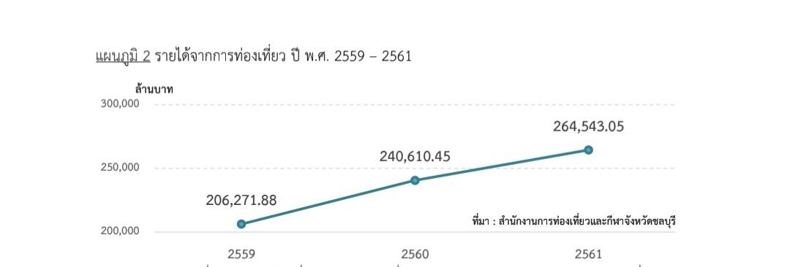
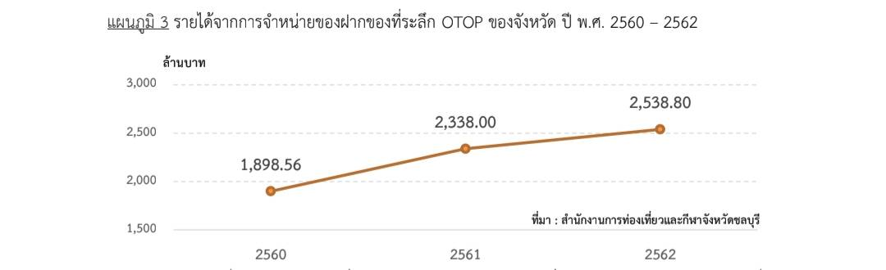

ในการรองรับการท่องเที่ยวหลากหลายประเภท เช่น การท่องเที่ยวเชิงนิเวศ การท่องเที่ยวเชิงนิเวศทางทะเล การท่องเที่ยวเชิงกีฬา การท่องเที่ยวเชิงประวัติศาสตร์
จังหวัดชลบุรีอยู่ในเขตภาคตะวันออก ตั้งอยู่ในชายฝั่งทะเลตะวันออกของอ่าวไทย มีขายฝั่งทะเลยาวถึง 160 กิโลเมตร สภาพพื้นที่ส่วนใหญ่เป็นที่ราบสลับกับเนินเขา
และที่ราบชายฝั่งทะเล มีภูเขาทอดยาวเกือบ กึ่งกลางของจังหวัดจากทิศตะวันตกเฉียงเหนือไปทิศตะวันออกเฉียงใต้ มีชายหาดและเกาะที่มีชื่อเสียง เช่น หาดบางแสน หาดพัทยา เกาะสีชัง เกาะล้าน เป็นต้น
และยังมีบริการหลากหลายในการเดินทางมายังจังหวัด ชลบุรี เช่น รถทัวร์ รถตู้สาธารณะ รถไฟ มีท่าอากาศนานาชาติอู่ตะเภา-ระยอง-พัทยา,ท่าเรือแหลมฉบัง และอยู่ไม่ไกลจากสนามบินนานาชาติสุวรรณภูมิ
จึงทำให้มีชาวไทยและชาวต่างประเทศเดินทางมาท่องเที่ยว ในจังหวัดชลบุรีเป็นจำนวนมาก

จากแผนภูมิที่ 1 แสดงจำนวนนักท่องเที่ยวชาวไทยและชาวต่างประเทศ ที่เดินทางมาท่องเที่ยวใน จังหวัดชลบุรี ในช่วง 5 ปีที่ผ่านมา ตั้งแต่ปี 2558 - 2562 มีจำนวนนักท่องเที่ยวเพิ่มขึ้นอย่างต่อเนื่อง
ในปี 2562 มีจำนวนนักท่องเทียวประมาณ 18.57 ล้านคน (ชาวไทย 8.59 ล้านคน และชาวต่างประเทศ 9.98 ล้านคน)เพิ่มขึ้นจากปี2561 ถึง 2.00% โดยมีนักท่องเที่ยวชาวไทยเพิ่มขึ้น คิดเป็นอัตราที่เพิ่มขึ้น 0.31 % และเป็นนักท่องเที่ยวชาวต่างประเทศเพิ่มขึ้น คิดเป็นอัตราที่เพิ่มขึ้น 3.51%

จากแผนภูมิที่ 2 แสดงรายได้ที่ได้จากการท่องเที่ยวในจังหวัดชลบุรี ในปี 2560 มีรายได้อยู่ที่ประมาณ 240,610.45 ล้านบาท
ในขณะที่ปี 2561 มีรายได้จากการท่องเที่ยวอยู่ที่ประมาณ 264,543.05 ล้านบาท หรือคิดเป็นอัตราที่เพิ่มขึ้นถึงร้อยละ 9.95
และมีแนวโน้นสูงขึ้นอย่างต่อเนื่อง

จากแผนภูมิที่ 3 แสดงถึงรายได้ที่มาจากการจำหน่ายของฝากของที่ระลึก OTOP ของจังหวัดชลบุรี ซึ่งมี แนวโน้นสูงขึ้นเช่นเดียวกับจำนวนนักท่องเที่ยวและรายได้ที่มาจากการท่องเที่ยวเช่นกัน โดยในปี 2562 มีรายได้จากการจำหน่ายอยู่ที่ 2,538.80 ล้านบาท เพิ่มขึ้นจากปี 2561 ถึง 8.59 %